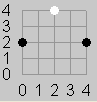
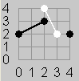
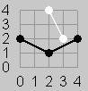
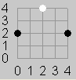
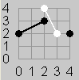
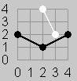

|  |  |
 |
 |
|
| Figure 1 | Figure 2 | Figure 3a | Figure 3b | Figure 4 |
| Source file: | connect.{c, cpp, java} |
| Input file: | connect.in |
|  | |
 |
 |
|
| Figure 1 | Figure 2 | Figure 3a | Figure 3b | Figure 4 |
Your task is to decide if a specified sequence of moves in the board game Twixt ends with a winning move.
In this version of the game, different board sizes may be specified. Pegs are placed on a board at integer coordinates in the range [0, N]. Players Black and White use pegs of their own color. Black always starts and then alternates with White, placing a peg at one unoccupied position (x,y). Black's endzones are where x equals 0 or N, and White's endzones are where y equals 0 or N. Neither player may place a peg in the other player's endzones. After each play the latest position is connected by a segment to every position with a peg of the same color that is a chess knight's move away (2 away in one coordinate and 1 away in the other), provided that a new segment will touch no segment already added, except at an endpoint. Play stops after a winning move, which is when a player's segments complete a connected path between the player's endzones.
For example Figure 1 shows a board with N=4 after the moves (0,2), (2,4), and (4,2). Figure 2 adds the next move (3,2). Figure 3a shows a poor next move of Black to (2,3). Figure 3b shows an alternate move for Black to (2,1) which would win the game.
Figure 4 shows the board with N=7
after Black wins in 11
moves:
(0, 3), (6, 5), (3, 2), (5, 7), (7, 2), (4, 4), (5, 3), (5, 2), (4, 5),
(4, 0), (2, 4).
Output: The output
contains one line for each data set: "yes" if the last move is a
winning move and "no" otherwise.
| Example input: | Example output: |
4 5 |
no |
Last modified on October 27, 2005 at 11:35 PM.